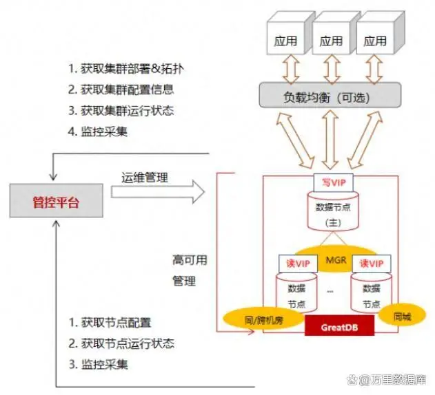

万里数据库携手运营商打造“智慧家庭” GreatDB助力美好生活
智慧家庭作为信息技术在家庭环境应用的落地实践，是以物联网、宽带网络为基础，依托移动互联网、云计算等新一代信息技术提供智能化服务及人与家庭设施的双向智能互动。过往智慧家庭业务系统采用国外数据库，存在安全隐患，业务系统也存在单点故障风险。
为遵循IT国产化战略，稳步提升IT系统国产化程度，某运营商积极开展数据库国产替代工作，前期采用国内开源数据库GreatSQL替换MySQL数据库进行使用，完成了前期功能验证；后期确定采用性能及服务支撑更优的国产数据库，将智慧家庭业务系统原先使用的MySQL数据库逐步替换为商业版数据库-万里安全数据库GreatDB，降低对国外数据库的依赖，进而实现自主可控目标。
智慧家庭业务系统对数据库有哪些需求？
1. 数据库选型总体要求
能力：数据库需具备安全可靠能力
要求采用的国产数据库符合国家信创要求，具备高度的安全可靠能力，能保障信息安全和业务系统的安全性和自主性；
适配：保障应用灵活自“适应”
要求采用的国产数据库高度兼容MySQL，在数据迁移过程中，应用程序尽量不涉及改造，使系统整体迁移成本和迁移难度降至最低；
性能：数据库拥有高性能
目前业务高峰时段存在大量并发操作，偶尔会遇到数据库性能瓶颈，需要目标数据库具有更高效的数据并发处理能力；
安全：数据库需支持多种加密方式
系统涉及大量家庭信息，需确保数据在存储、传输和处理过程中的安全性，防止数据泄露、篡改等安全风险。
2. 万里安全数据库GreatDB充分满足需求
高可靠 …
万里安全数据库GreatDB拥有跨机房的容灾部署能力、机房级的故障自动切换能力，能保障任何故障场量下RPO＝0，RTO＜30S，为将来业务系统可能进行的高可用扩展提供了技术基础；
MySQL兼容能力 …
GreatDB安全数据库具备优秀的MySQL兼容能力，能够保障业务系统从MySQL平滑、顺利迁移到GreatDB，同时可将迁移成本降到最低；
高性能 …
万里安全数据库GreatDB采用自主研发模式，致力于打造极致稳定、极致性能与极致易用的数据库产品。作为MySQL平替最优选择的国产数据库，GreatDB在性能上较MySQL主流版本实现了大幅提升。智慧家庭业务系统将数据库替换为国产数据库GreatDB后，不仅原有的基础功能不受影响，还能满足业务系统的高并发需求，响应高效及时；
高安全性 …
安全数据库GreatDB首批通过了中国信息安全测评中心和国家保密科技测评中心联合发布的安全可靠测评，且获得IT产品信息安全EAL4增强型（EAL4+）认证，表明GreatDB在产品及信息安全保障方面均获得了安全性顶级认可，可以完全满足用户的安全性需求；
良好的国产化生态 …
智慧家庭业务系统的数据库国产化工作，涉及应用软件、中间件适配改造等多环节，同时业务系统采用国产服务器和操作系统，需要数据库拥有良好的国产化生态。GreatDB安全数据库全面兼容国产主流软硬件生态链产品，拥有完善的国产生态体系。
一主两备数据库集群
全栈国产大幅提升国产数据库战略价值
本解决方案采用万里安全数据库GreatDB一主两备集群并适配业务场景，帮助客户提升系统整体性能，实现业务连续性和敏捷性，构建全国产技术栈，持续降低IT成本，提高业务系统运行效率，为运营商IT国产化战略带来巨大价值。智慧家庭业务系统采用安全数据库GreatDB的这一成功实践，充分验证了数据库国产化自主可控的可行性与国产数据库的产品技术水平。
1、一主两备 保障业务运行高可靠
根据业务模型和应用系统对数据持久化的需求，结合系统容灾和业务连续性因素，经评估后选择1主2备架构，解决原有的单点故障风险，使业务系统实现高可靠。

▲ 智慧家庭业务系统架构图
2、数据一致性及高可用，满足业务差异化发展
由于智慧家庭业务系统对数据安全性要求较高，在主库出现故障无法恢复的情况下，要求接管的备库能实现“零损失”恢复。安全数据库GreatDB为业务系统提供集群主备库之间的数据强一致性保证功能，确保了数据库备库接管主库业务后的数据强一致性，保障高可用。
方案优势
该解决方案助力运营商成功构建全栈IT自主可控的智慧家庭业务系统，支撑业务功能和规模应用，并实现以下四重目标：
1、保障业务连续性
通过国产数据库产品替换国外数据库，构建运营商核心业务支撑系统的业务连续性保障体系。采用高可用机制，确保特殊场景下业务连续性得到保障。通过设置配置项，满足业务数据一致性和系统高可用性之间的需求平衡。
2、一站式&全生命周期运维管理
数据库运维管理采用万里数据库提供的一站式、全生命周期数据库运维管理平台GreatADM，覆盖数据库全生命周期运维管理场景，可自定义切换策略、实时监控。当不同层次或业务故障时，系统仍能高可靠运行且互不影响，打造良好的客户体验。
3、助力全栈国产化
构建全国产技术栈底座，形成通用IT体系的全栈自主可控技术体系，并通过核心业务系统的应用验证，为后续其他业务系统推行全栈国产化打下坚实基础。
4、实现降本增效
通过全栈IT国产化体系的构建，在打破了国外技术垄断的同时，还有效降低了IT综合成本，进而使整体成本大幅降低，为业务长期可持续发展实现降本增效。
万里安全数据库GreatDB已在运营商行业完成多个核心系统的国产数据库替换工作，如开关机系统、交互中心、积分票据系统、支付中心&服开中心、营销活动中心（营销策划库）&营销交易中心（营销执行库）、RPS写卡应用等在内的多个重要业务系统。
智慧家庭业务系统项目再次验证了安全数据库GreatDB在运营商核心系统进行数据库替换的可行性和应用实践能力，为该运营商未来在更广泛的业务领域推广和规模化应用国产数据库提供了成功经验。